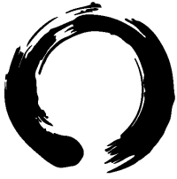

Zen
Heelheid en Eenvoud
De Zen cirkel die de eerste letter van het logo vormt, staat voor heelheid en eenvoud. Een streven naar heelheid zullen veel mensen herkennen. Dingen moeten heel ofwel perfect zijn. De cirkel biedt echter een ontsnappingsmogelijkheid, een imperfectie waardoor deze niet helemaal gesloten is. De opening biedt de mens een ontsnappingsmogelijkheid om niet helemaal aan de totale perfectie te hoeven voldoen.
De lampen van OostersLicht staan voor heelheid en eenvoud, maar doen ook recht aan de opening in de cirkel.